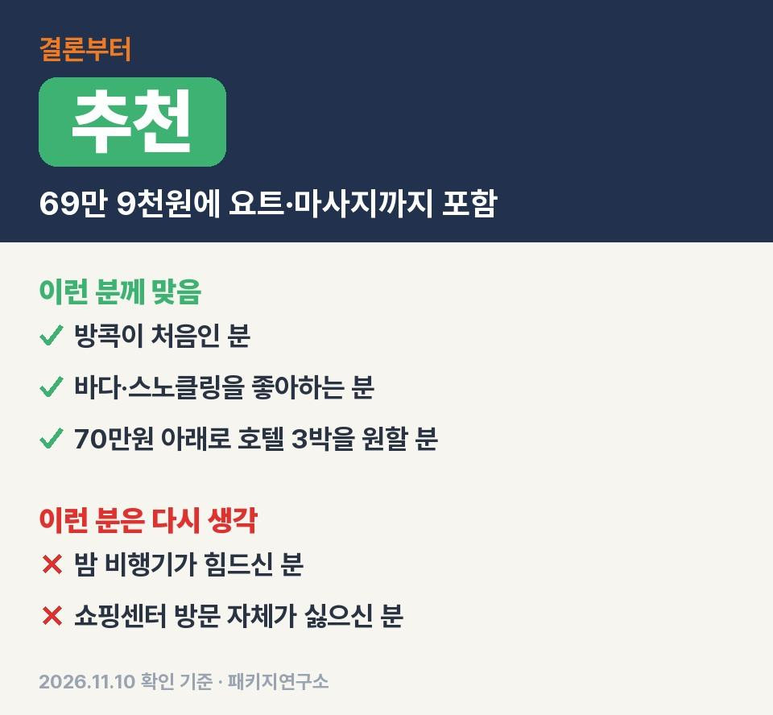
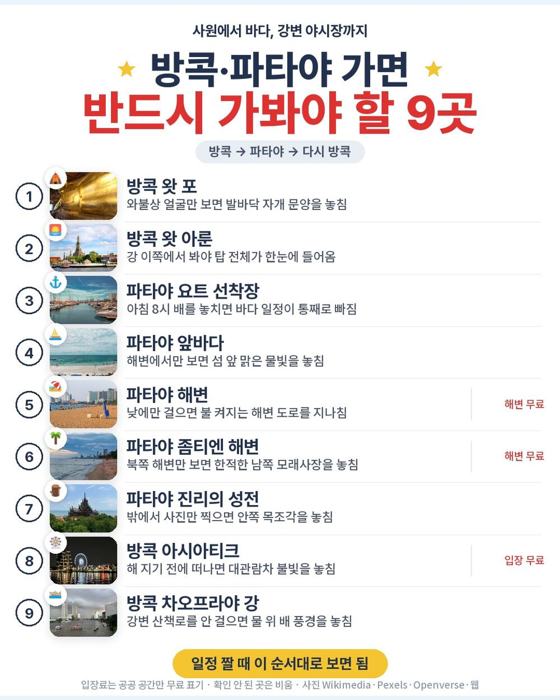
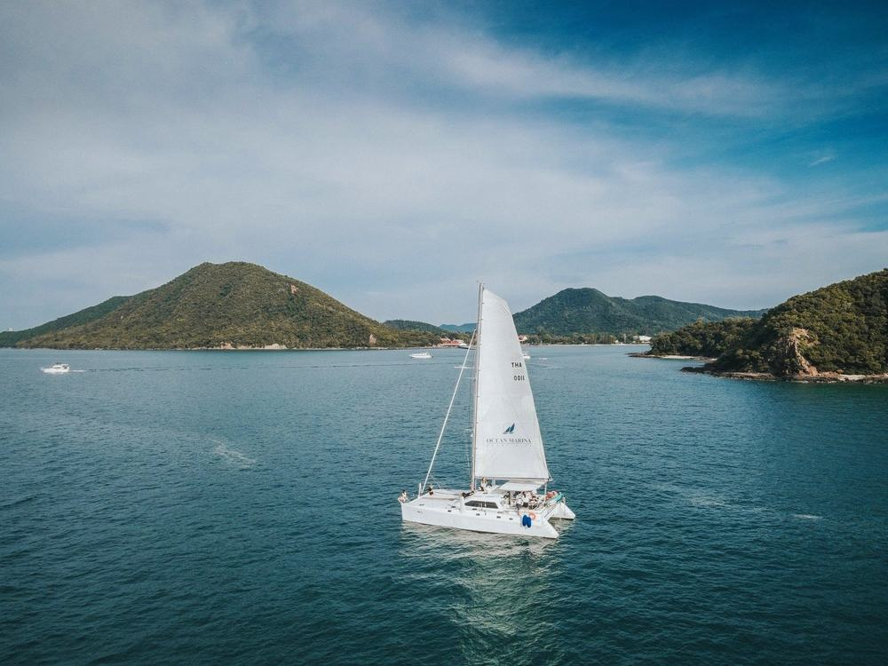
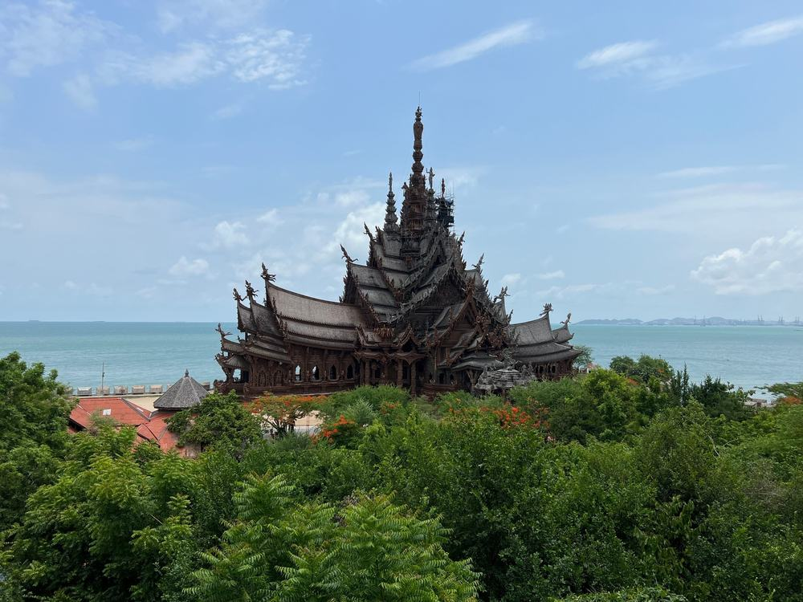
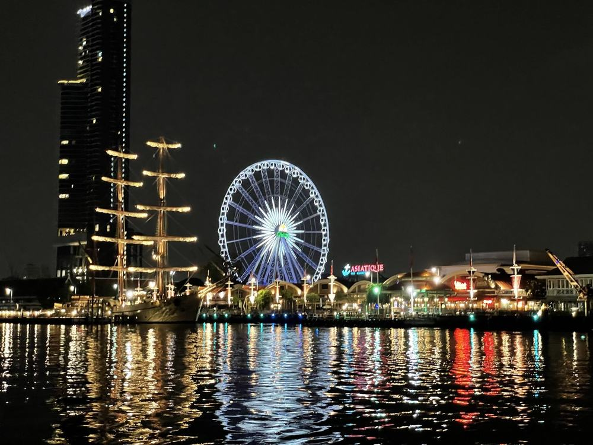
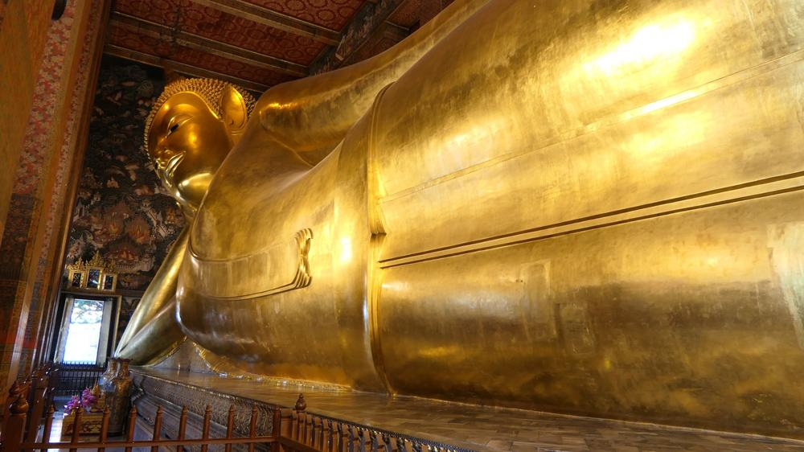

방콕·파타야 상품에서 요트 크루즈와 타이 전통 마사지 1시간이 둘 다 기본으로 붙은 70만원 아래 상품은 흔하지 않음.
다녀온 후기가 아니라 하나투어 일정표와 포함·불포함 원문을 줄마다 따져 정리한 글임.
결론 — 추천. 왓 포·진리의 성전·아시아티크에 요트 크루즈와 마사지까지 들었고 현지에서 꼭 더 내는 건 경비 50달러뿐. 다만 왕복 밤 비행기가 힘드신 분은 맞지 않음.

오늘 기준 출발일별 요금 보기
https://naver.me/xLN96htW

| 항목 | 내용 |
|---|---|
| 가격 | 1인 699,000원 (성인 · 11월 출발 기준) · 2인 1,398,000원 |
| 여행사 | 하나투어 (하나팩 세이브) |
| 항공 | 트리니티항공 직항 (TW0101·TW0102) · 인천 19:50 → 방콕 00:10 / 방콕 01:30 → 인천 09:00 |
| 숙소 | 디발룩스 리조트 & 스파 방콕(공항 근처) 1박 → 윈덤 좀티엔 파타야 2박 |
| 일정 | 3박 5일 · 전용 차량 · 한국어 가이드 · 식사 9회 · 쇼핑센터 3곳 · 가이드·기사 경비 50달러 별도 |
▶ 내 출발일 오늘 기준 요금 확인 (제휴 링크 · 예약 시 수수료를 받으며 가격은 같습니다)
▶ 11월 10일 기준 방콕 패키지 최저 62만 9천원부터 — 출발일별 값 한 화면에: 비교 페이지
같은 하나투어 방콕·파타야 3박 5일 중엔 172만 9천원짜리도 있음(12월 출발 기준 · 쇼핑 없음 · 경비 포함). 출발일마다 값은 다름.
| 번호 | 내용 | 한 줄 답 |
|---|---|---|
| 1 | 이 값에 들어 있는 것 | 관광 5곳 · 요트 |
| 2 | 현장에서 더 낼 돈 | 2인 약 13만 6천원 |
| 3 | 일정과 체력 | 버스 편도 2시간 30분 |
| 4 | 자유여행으로 짜면 | 항공 빼고 약 57만 5천원 |
| 5 | 맞는 분 · 안 맞는 분 | 3 대 3 |
요트 크루즈 반나절과 마사지 1시간이 기본으로 붙어서 같은 값대에서 체험 쪽이 두꺼운 편임.

- 항공: 트리니티항공 인천–방콕 수완나품 직항 왕복
- 숙소: 공항 근처 리조트 1박 + 파타야 호텔 2박(상품 안내 전 일정 5성급)
- 식사: 9회 · 왓아룬 뷰 레스토랑 특식, 수끼, 제육쌈밥 특식, 쌀국수 세트, 아시아티크 자유식 300바트
- 관광: 왓 포 · 하우스 오브 베네딕트(음료 1잔) · 요트 크루즈 · 진리의 성전 · 아시아티크, 입장료 포함
- 그 밖: 타이 전통 마사지 1시간 · 한국어 가이드 · 여행자보험(1억원)
요트에선 줄낚시, 원숭이섬 조망, 스노클링을 차례로 함. 3일차 오후는 통째로 자유라 호텔 수영장이나 해변에서 쉬면 됨.
꼭 더 내는 건 가이드·기사 경비 1인 50달러 하나라, 두 분이면 약 13만 6천원만 더 잡으면 됨.
| 항목 | 금액 | 필수/선택 | 비고 |
|---|---|---|---|
| 가이드·기사 경비 | 100달러 (약 13만 6천원) | 필수 | 1인 50달러 · 1달러 약 1,361원 |
| 선택관광 | 0원~ | 선택 | 마사지·쇼·크루즈 목록, 안 하면 호텔 귀환이나 자유시간 |
| 기내식 | 각자 | 해당 시 | 저비용 항공이라 기내식 유료 |
| 매너팁 | 각자 | 자율 | 안 내도 불이익 없음 |
| 합계 (2인 필수분) | 약 13만 6천원 | 상품가 포함 총 약 153만 4천원 |
- 경비는 달러 현금으로: 현지 가이드에게 냄
- 선택관광은 고르기: 불참해도 추가 비용·일정 불이익 없다고 명시됨
버스가 긴 날은 방콕과 파타야를 오가는 2일차·4일차 두 날이고 그 사이 3일차는 오후가 비어 있음.

| 일차 | 가는 곳 | 버스 | 걷기 | 점심 · 저녁 |
|---|---|---|---|---|
| DAY 1 | 인천 19:50 출발 → 방콕 00:10 도착 → 공항 근처 호텔 | 약 20분 | 적음 | 없음 · 없음 |
| DAY 2 | 왓 포 → 왓아룬 뷰 점심 → 파타야 → 하우스 오브 베네딕트 | 약 3시간 30분 | 보통 | 왓아룬 뷰 특식 · 수끼 |
| DAY 3 | 요트 크루즈 → 오후 자유 | 약 30분 | 적음 | 도시락 또는 현지식 · 제육쌈밥 |
| DAY 4 | 진리의 성전 → 방콕 → 쇼핑센터 3곳 → 아시아티크 → 공항 | 약 4시간 | 보통 | 쌀국수 세트 · 아시아티크 자유식 |
| DAY 5 | 방콕 01:30 출발 → 인천 09:00 도착 | 거의 없음 | 적음 | 없음 · 없음 |
- 비행: 갈 때 6시간 20분, 올 때 5시간 30분 · 둘 다 밤 시간대
- 사원 복장: 민소매·반바지·슬리퍼는 왓 포 입장 불가 → 긴 바지와 운동화
- 4일차: 아시아티크 구경 뒤 공항까지 약 50분, 그대로 새벽 비행기 탐
이 상품 조건 한눈에 (출발일 달력·두 분 값·비슷한 상품과 비교)
https://pkg-lab.com/pkg/AAP2683B4C51C26TWA/?utm_source=ghpages&utm_medium=post&utm_campaign=daily
같은 목적지 다른 여행사 패키지, 쇼핑·선택관광·가이드 경비까지 비교
https://pkg-lab.com/dest/BKK/m/2026-11/?utm_source=ghpages&utm_medium=post&utm_campaign=daily
항공 빼고만 세어도 1인 약 57만 5천원이라, 방콕–파타야 이동까지 직접 챙기면 패키지 쪽이 덜 듦.

| 항목 | 금액 | 근거 |
|---|---|---|
| 인천–방콕 왕복 항공 | 확인 못 함 | 2026-11-10 마이리얼트립 조회 실패 — 같은 날 값 미확인 |
| 호텔 3박 | 200,000원 | 공항 근처 1박 + 파타야 2박, 2인 1실 1인분 (추정) |
| 식사 9회 | 120,000원 | 특식 포함 (추정) |
| 요트 투어 반나절 | 100,000원 | 스노클링 포함 (추정) |
| 입장료·마사지 1시간 | 60,000원 | 왓 포·진리의 성전·마사지 (추정) |
| 방콕↔파타야 차량 | 60,000원 | 왕복 2인 나눠 1인분 (추정) |
| 공항 이동 | 20,000원 | 왕복 택시 1인분 (추정) |
| 여행자보험 · 유심 | 15,000원 | 5일 기준 (추정) |
| 가이드 | — | 자유여행은 없음 |
| 합계 (항공 제외) | 약 575,000원 |
여기에 왕복 항공이 붙으면 69만 9천원 아래로 맞추기 어려움.
방콕에서 파타야까지 편도 2시간 30분 이동과 새벽 공항 픽업을 직접 잡아야 한다는 게 제일 큰 차이임.
걸리는 건 비행 시간대와 쇼핑센터 쪽이고 값에 든 내용은 빠지는 데가 거의 없음.

| 맞는 분 | 안 맞는 분 |
|---|---|
| 방콕이 처음인 분 | 왕복 밤 비행기가 힘드신 분 |
| 바다·스노클링을 좋아하는 분 | 쇼핑센터 방문 자체가 싫으신 분 |
| 70만원 아래로 호텔 3박을 원하는 분 | 일정 없이 오래 쉬고 싶은 분 |
이 상품으로 다녀온 분들 글에는 중간중간 쉬는 시간이 있어 덜 지쳤다는 말과, 쇼핑에서 강하게 권하지 않아 편했다는 말이 있었음. 반대로 이동 버스 좌석 상태가 아쉬웠다는 글도 하나 보임.
안 맞는 쪽에도 보완은 있음. 첫날은 공항 근처 호텔로 바로 가서 쉬고, 쇼핑센터에선 안 사도 됨.
Q. 방콕 패키지 쇼핑은 이 상품이 몇 번인가요?
A. 3곳. 4일차 방콕으로 돌아오는 길에 한 곳당 50분씩 들름. 구매는 자유.
Q. 방콕 패키지 노팁인가요?
A. 아님. 가이드·기사 경비 1인 50달러를 현지에서 냄. 매너팁은 자율.
Q. 방콕 패키지 가격은 이 상품이 얼마인가요?
A. 11월 출발 기준 1인 69만 9천원, 2인 139만 8천원. 날짜마다 값이 달라서 출발일별로 확인해야 함.
요트와 마사지까지 챙긴 70만원 아래 방콕·파타야 상품.
밤 비행기만 괜찮으면 처음 가는 방콕으로 고르기 좋은 구성임.
오늘 기준 출발일별 요금 보기
https://naver.me/xLN96htW
이 글에는 네이버 제휴 링크가 포함되어 있으며, 링크를 통해 예약하시면 일정 수수료를 받습니다. 가격은 동일합니다. 가격과 구성은 2026년 11월 10일 확인 기준이며 출발일에 따라 달라질 수 있습니다.
▶ 이 상품, 영상으로 보기 (유튜브)
▶ 방콕 패키지 오늘 값 나란히 비교
▶ 같은 목적지 다른 여행사 패키지, 쇼핑·선택관광·가이드 경비까지 비교: pkg-lab.com